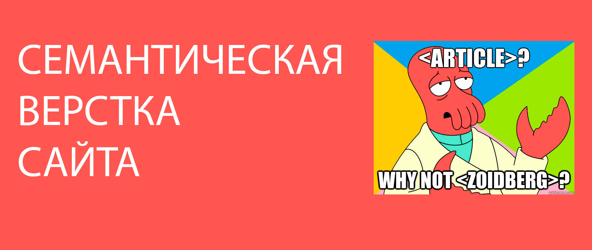

Семантическая верстка сайта, помогите роботу понять ваш сайт
Чем глубже вы изучаете html и web разработку, тем чаще слышите одно загадочное слово “семантика”. В этой статье мы разгадаем загадку, и расскажем что такое семантическая верстка. Разберем основные теги которые используются для описания семантической структуры.
Что такое семантическая верстка?
Семантическая верстка — это изучение значений слов и выражений. В html ничто иное как написание элементов со смыслом. Семантический элемент четко описывает свое значение как для браузеров, так и для разработчиков.
Давайте взглянем на отличие семантического элемента от обычного.
Например div или span — простые элементы, глядя на них мы не можем понять какого типа контент в них содержится. Это может быть просто текст, картинка, или другие теги.
Теперь семантические form, table, и article здесь уже совсем другое дело. Только прочитав названия мы можем с легкостью понять что внутри этих тегов.
Пример верстки обычной и семантической:
Надеюсь на этом этапе вы уловили разницу между типами тегов. Хочу сразу отметить, что это не единственные теги, их много, а с появлением html5 стало еще больше. Дальше мы познакомимся с ними.
Почему семантическая верстка сайта так важна?

Хорошо написанный CSS может скрыть от глаз пользователя плохую верстку html. Но мы не можем скрыть ее от поисковых роботов, плагинов браузера, читалок и других инструментов и девайсов.
Исходя из этого семантическая верстка является обязательной, если вы хотите чтобы ваш сайт был доступен любым посетителям с разнообразных устройств, и хорошо ранжировался в поисковых системах. Не стоит забывать и о тексте, который тоже должен быть хорошо структурирован, чтобы пользователям было комфортно его читать.
Как реализовать семантическую верстку страницы?
Существует одно единственное правило, при написании мы должны использовать теги которые в конкретном случае могут наиболее точно передать значение и тип контента, поисковым роботам и программам. Если нет подходящих тегов, то используем обычные т.к. div
Мы можем сгруппировать наиболее распространенные и важные элементы на четыри группы:
- Теги структуры документа
- Текстовые теги
- Медиа теги
- Корреляционные теги
Теги структуры документа
В прошлом элемент div был основным с помощью которого создавалась структура html документа, W3C обратили внимание на то, что разработчики использовали в названиях id и class слова header, footer, menu и т.д. Которые описывали смысловое содержимое элемента. Так и появились новые семантические теги в HTML5.
header: Элемент который используется как контейнер для логотипа, названия сайта и меню. Также для определения заголовков, в статьях и т.д.
footer: Используется в основном для описания нижней части страницы, обычно содержит информацию об авторе, контакты, копирайт, дополнительное меню и кнопку которая ведет к верху страницы.
main: Элемент высокого уровня, используется как контейнер для уникального содержимого на странице, которое не повторяется на других страницах сайта.
nav: элемент для создания навигации по сайту. nav обычно находится в header (хедере) и footer (футере), а также может быть использован в aside (сайдбаре) сайта.
section: Описывает разделы документа, должен содержать в себе заголовок h1 — h6
aside: Используется для идентификации контента, который связан с основным контентом на странице. Например, aside элемент может содержать определение термина в статье, рекламные объявления, дополнительную информацию на странице.
article: Это самодостаточный элемент который используется для описания статьи сайта, блога так же публикации на форуме. Может содержать элемент header и footer.
Текстовые теги
Существует множество тегов для работы с текстом на странице, но не все они семантические. К примеру можно использовать span для стилизации текста, но информацию о содержимом браузеру он не передает.
h1, h2, h3, h4, h5 и h6: используются для обозначения заголовков. Самый высокий уровень, или самым главным, заголовком является h1, за ним идут в порядке убывания важности заголовки уровня h2 — h6.
strong: тег придает тексту важности, как правило, отображается полужирным шрифтом.
mark: используется для выделения текста в определенном контексте. Например, он может быть использован, чтобы выделить каждое вхождение ключа поиска на странице результатов поиска.
cite: тегом обычно помечают названия книг, песен, фильмов, тв-передач.
blockquote и q: элементы используются для вставки цитаты из текста другого источника.
time: тег может быть использован, чтобы сказать браузеру, поисковикам и другим устройствам, что конкретная часть контента представляет собой время и дату.
Медиа теги
HTML5 также включает в себя три тега, которые определяют тип медиа контента. Теги подсказывают браузеру как именно отображать данный контент. а так же они придают смысловое значение для контента.
audio: Используется для добавления одного или нескольких аудио на страницу, отображается в виде аудио плеера.
video: подобен аудио тегу, но используется для добавления видео контента в документ.
picture: Элемент picture дает разработчикам возможность более гибко отображать картинку на странице. Часто используется в адаптивной верстке, так как может содержать сразу несколько картинок которые отображаются при определенных медиа условиях.
Корреляционные теги
Некоторые теги используются для создания связи между другими элементами. К примеру тег маркированного списка ul говорит браузеру что элементы li связаны и должны появляться в определенном порядке. Есть еще теги:
ol: тег нумерованного списка, аналогичен с тегом ul
figure: используется для группировки такого контента как картинки, графики, может содержать заголовок figcaption.
address: описывает контактную информацию на странице. И связывает ее с автором статьи или страницы.
Если вы новенький в html то попробуйте применить все эти теги для создания семантической верстки страницы уже в следующем проекте. Не используйте элементы если не уверены нужен ли он там или нет, использование правильного тега очень важный момент. Лучше потратьте немного времени для глубокого его изучения. Это даст свои плоды в будущем.